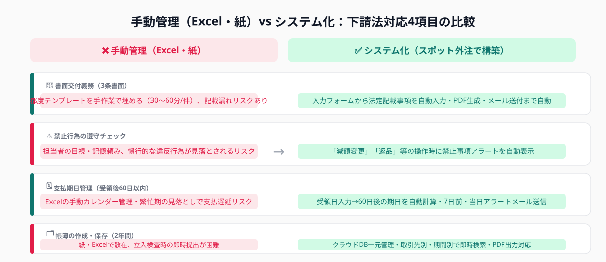

中小企業が見落としがちな下請法の3大義務
親事業者（発注側）と下請事業者（受注側）の間の取引を公正にするための法律。資本金3億円超の企業が個人・中小企業に業務委託する場合などに適用される。書面の交付・保存・支払期日の厳守・禁止行為の遵守が義務付けられており、違反には公正取引委員会から勧告・企業名公表の措置が取られる。
下請法は「大企業が守るもの」というイメージを持たれがちですが、資本金1,000万円超〜3億円以下の中小企業でも「個人事業主・フリーランスへの業務委託」や「さらに小規模な下請業者への発注」においては親事業者として規制対象になります。しかし実態としては「自分たちが下請法の対象事業者だと気づいていない」「対象とは知っていたが具体的に何をすればよいか分からない」という企業が少なくありません。
公正取引委員会は近年、下請法の厳格な執行を強化しており、中小企業に対する立入検査も増加傾向にあります。特に以下の3つの義務は見落とされやすく、かつ違反した場合のリスクが高い項目です。
義務① 書面交付義務（3条書面）
発注のたびに「発注書（3条書面）」を下請事業者に交付しなければなりません。記載しなければならない事項は法律で定められており、品名・数量・代金・支払期日・支払方法・給付の内容などを漏れなく記載する必要があります。口頭発注や「後で書類を送れば大丈夫だろう」という運用は違反になります。
Excel管理では発注のたびにテンプレートを手動で埋め、メールで送付するという作業が発生します。記載項目が多く繁忙期には記載漏れが起きやすく、発注書の控えが担当者のローカルPCに散在するという問題も生じます。
義務② 禁止行為の遵守
下請法は「受領拒否」「支払い遅延」「不当な代金の減額」「買い叩き」「不当なやり直し要求」など11種類の禁止行為を定めています。特に「発注後に一方的な単価引き下げを求める」「納品後に理由をつけて返品する」といった行為は禁止されており、取引慣行として続けてきた行為が実は下請法違反だったというケースも起きています。
義務③ 帳簿の作成・保存義務
親事業者は下請取引に関する帳簿を作成し、2年間保存しなければなりません。帳簿には取引先・発注日・代金・支払日などを記録する必要があります。紙や分散したExcelファイルでの管理では、公正取引委員会の調査が入った際に帳簿を即座に提出できない事態になりがちです。
スポット外注で発注管理システムを構築するメリット

発注管理システムを内製しようとすると社内のエンジニアリソースが必要になります。パッケージソフトを導入すると月額費用が継続的に発生し、カスタマイズの自由度も限られます。そこで有効なのがスポット外注（タスク単位での外部エンジニアへの開発依頼）です。
メリット① 初期費用を大幅に抑えられる
市販のERPや調達管理SaaSでは導入費用が数百万円に上ることもありますが、スポット外注で自社の発注フローに特化した最小限のシステムを構築することで、50〜150万円程度のコストで必要な機能だけを実装できます。既存の会計ソフトや基幹システムとのデータ連携も、必要な範囲だけ開発できます。
メリット② 自社の発注フローに完全にフィットする
業種・業態によって発注書の書式や承認フローは大きく異なります。建設業では下請法に加えて建設業法の書面要件も絡み、製造業では購買・調達の承認階層が複雑なケースがほとんどです。スポット外注では「うちはこういうフローで動いている」という現状をエンジニアに共有し、そのまま反映したシステムを作れます。
メリット③ 短期間で稼働できる
大規模なシステムを一から作るのではなく、下請法コンプライアンスに必要な最低限の機能（書面自動生成・禁止事項チェック・支払期日アラート・帳簿保存）に絞ってスコープを決めると、要件定義から本番稼働まで2〜3か月で完了します。着手から短期間で法令対応ができる体制を整えられます。
向くケース：下請取引件数が月20〜200件程度・発注書の書式が既に社内で決まっている・既存の会計ソフトとのCSV連携程度でよい。
向かないケース：月1,000件超の大量発注で高いスループットが必要・グローバル取引での多通貨管理が必要・基幹システムとのリアルタイム連携が必須。後者は大手SIerのパッケージ導入が現実的です。
スポット外注で発注管理システムを構築する3ステップ

STEP 1：現行発注フローの棚卸しと下請法対応チェック（1〜2週間）
最初にやるべきことは「現在の発注フローの見える化」と「下請法の3大義務に対して自社がどこで対応できていないかの洗い出し」です。以下の観点で現状を整理します。
・発注書の交付状況：毎回発注書を交付しているか？記載項目は法定要件を満たしているか？
・禁止行為の洗い出し：「急な代金減額の要求」「納品後の一方的な返品」など、慣行として行ってきた行為が禁止事項に該当しないか
・帳簿の管理状況：発注記録はどこに保存されているか？2年以内の取引を即座に検索・提出できるか
・支払期日の管理：納品受領後60日以内に支払っているか？期日管理はExcelか・手動カレンダーか
このチェックをA4用紙1〜2枚分のリストにまとめると、スポット外注先への依頼精度が格段に上がります。「今どこが対応できていないか」が可視化されるため、開発すべき機能の優先順位も明確になります。
STEP 2：システム要件定義とスポット外注先への依頼（1〜2週間）
STEP1の課題リストをもとに「何を自動化するか」を機能要件として整理します。下請法コンプライアンス対応の発注管理システムに必要な機能は大きく4つに集約されます。
・発注書自動生成：品名・数量・代金・支払期日・発注日など法定記載事項を入力フォームで入力→PDF発注書を自動生成・メール送付
・禁止事項チェックアラート：「減額変更」「納品後取消」などの操作をした際に「下請法の禁止行為に該当する可能性があります」とアラートを出す
・支払期日自動管理：納品受領日を入力すると60日後の支払期日が自動計算され、期日7日前・当日にアラートメール送信
・発注・支払い履歴の帳簿管理：全取引をクラウドDBに保存・取引先別・期間別での即時検索・PDF出力
スポット外注先への依頼時に伝えるべき情報は以下の通りです。
・現在使用している会計ソフト・基幹システムの種類（弥生・freee・マネーフォワード等）
・月間の発注件数と取引先数の目安
・社内の発注承認フロー（例：担当者入力→上長承認→送付）
・希望する稼働形式（クラウドWeb・社内オンプレ・既存ツールへの追加機能）
・想定する予算と稼働希望時期
要件定義書は必ずしも完成度の高いドキュメントでなくて構いません。「こういう問題が起きている」「こういう操作ができればよい」という箇条書きレベルで十分です。スポット外注のエンジニアがヒアリングして具体化してくれます。
STEP 3：開発・テスト・運用開始（4〜8週間）
スポット外注先が要件定義を受けて開発・テストを行い、本番稼働に向けた準備を進めます。この段階で発注側が行うべきことは主に2点です。
まずテスト確認です。開発中間段階でデモ版を確認し「実際の発注書フォーマットと一致しているか」「アラートが適切なタイミングで発火するか」「既存の会計データと整合するか」を検証します。社内の実際の発注担当者にも触ってもらい、操作感のフィードバックをエンジニアに伝えます。
次に運用ルールの整備です。システム稼働開始に合わせて「社内の発注フローをシステム経由に切り替えるタイミング」「過去の発注データをどの時点から移行するか」「担当者向けのレクチャー日程」を決めます。スポット外注のエンジニアに操作マニュアルの簡易版作成を依頼しておくと、引き継ぎがスムーズになります。
ANKENでは、発注管理システムの設計・開発経験を持つエンジニアをタスク単位でご紹介しています。要件定義の段階からご相談可能です。「Excelでの管理に限界を感じている」「公正取引委員会の調査に備えたい」という企業の初回相談は無料です。
👉 無料で相談する（発注管理システムのスポット開発を依頼する）発注管理・調達システム経験エンジニアを最短1週間でご紹介します。
費用感と向く企業タイプ
スポット外注で発注管理システムを構築する場合の費用は、実装する機能の範囲と既存システムとの連携複雑度によって変わります。
最小構成（発注書自動生成＋帳簿保存のみ）
Web入力フォームで発注書PDFを自動生成し、クラウドDBに保存・検索できるシンプルな構成。既存会計ソフトとの連携なし。工数目安は100〜150時間・費用目安は50〜75万円・稼働まで約6〜8週間です。下請法の最低限の要件を満たしたい場合の最速・最安のアプローチです。
標準構成（全4機能＋会計ソフトCSV連携）
発注書自動生成・禁止事項アラート・支払期日管理・帳簿保存の4機能に加え、弥生やfreeeへのCSVエクスポート機能を追加した構成。工数目安は200〜250時間・費用目安は100〜125万円・稼働まで約8〜10週間です。多くの中小企業でこの構成が最もコスパに優れた選択肢になります。
拡張構成（基幹システムAPIリアルタイム連携）
既存の基幹システム（SAPやOracleの中小企業向けクラウド版等）とリアルタイム連携し、受発注・在庫・会計データを一体管理する構成。工数目安は350〜500時間・費用目安は175〜250万円・稼働まで3〜5か月です。発注件数が月200件を超える企業や、複数拠点で一元管理が必要な企業向けです。
スポット外注での発注管理システム構築が特に向く企業タイプ
次の条件に当てはまる企業は特に恩恵が大きいです。
・月の発注件数が20〜200件程度で、担当者が手動でExcelを埋めている
・フリーランス・業務委託の活用が増え、発注管理の手間が増加している
・公正取引委員会や大手取引先からコンプライアンス対応を求められている
・インボイス制度対応と合わせて発注管理の整備を進めたい
・既存の会計ソフト（弥生・freee・マネーフォワード等）との連携で完結させたい
よくある質問
- Q. 自社が下請法の「親事業者」に該当するか確認するにはどうすればよいですか？
- A. 資本金の組み合わせと取引の種類（製造委託・役務委託等）で判断します。公正取引委員会のWebサイトに判定フローがあり、スポット外注のエンジニアにシステム設計前に確認を依頼することもできます。
- Q. 既存の会計ソフト（弥生・freee等）と連携できますか？
- A. 多くの会計ソフトはCSVエクスポート・インポートに対応しています。APIが公開されているサービスではリアルタイム連携も可能です。スポット外注の要件定義時に現在の会計ソフトの種類を伝えてください。
- Q. フリーランスへの発注管理システムとして使えますか？
- A. 使えます。フリーランス・業務委託への発注は下請法の対象になるケースが多く、3条書面の交付と帳簿保存が必要です。スポット外注で構築するシステムはフリーランスへの発注書管理にも対応して設計できます。
まとめ
下請法コンプライアンス対応の発注管理システムは、スポット外注を活用することで最短2か月・50〜150万円の予算で構築できます。書面交付義務・禁止行為チェック・支払期日管理・帳簿保存という4つの機能を優先度順に実装することで、Excelの手動管理から段階的に移行できます。
進め方の要点は3つです。①現在の発注フローと下請法対応の抜け漏れを洗い出して棚卸しを行う、②「まず自動化すべき機能」を絞り込んだ要件定義でスポット外注先への依頼精度を上げる、③既存の会計ソフトや承認フローとの連携範囲を最初に決めてスコープを明確にする。公正取引委員会の執行強化が進む今、発注管理システムの整備は「罰則回避のための対処療法」ではなく、取引先との信頼関係を守るための経営基盤投資として捉えることが重要です。